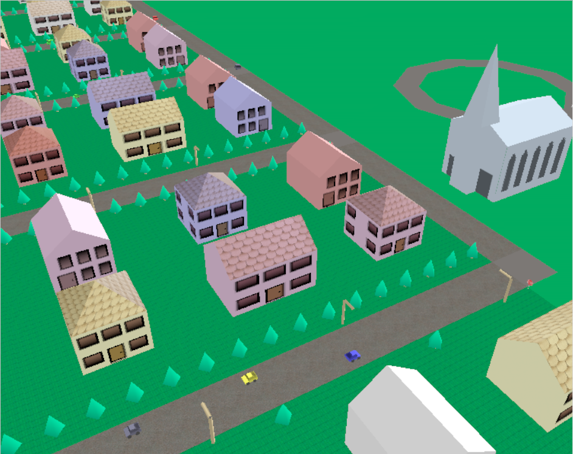

Page 27: Graphics Town Buildings
The pedagogical goals of this exercise are to give you practice defining shapes with meshes and adding textures to them.
In the coming weeks, you will make Graphics Town. To start, in this exercise you will make a few kinds of buildings to put into your town.
For this assignment, you need to make at least two different kinds of buildings. The buildings must have shapes that are more complicated than a box (or other single primitive), and must have textures.
Here is a picture of the old Graphics Town framework (the houses are circa 2000, but they stayed in the assignment up to 2014).

In this picture, you can see three kinds of houses and a church. There are houses that are squarish with a pointy roof (this is called a “pyramid hip” roof), and houses that have two-piece roofs (so two of the faces of the building have five edges) - these are called “open gable” roofs. If you want to learn the architectural terms, see this page - but this has little to do with graphics. The gable roof houses have two variants: one where the front door is on a five-sided face and one where the front/back door is on a four-sided face. These simple buildings are good enough to satisfy the needs of the assignment.
For the requirements, you need to make two different building types. The two buildings must have different shapes (so the gable roof houses above are a single shape). The buildings must have doors and windows (or other features), and must use at least one texture. If you need ideas, this page about roofs shows a bunch of different types.
You can choose what kinds of buildings to make. You can make houses, stores, schools, office buildings, castles, forts, igloos, … (we’re open to what qualifies as a “building”). A building must be more than a single primitive shape (so no boxes - even if you want to make a modernist skyscraper).
Remember: be sure to add your textures to the repository so they get pushed to GitHub!
view - look at the box and experiment with it
examine - look at the code for the box
edit - change the box's content
rubric - several steps are suggested in the rubric page - form elements on page in rubric
05-27-01.html 05-27-01.js
| Kind
Kind of rubric items: standard - expected from all students advanced - used to get a better grade creative - an opportunity to do something creative optional - not required, but encouraged |
Description | |
| standard | Building 1 with texture | |
| standard | Building 2 with texture | |
| standard | Tree or plant | |
| advanced | Building Type 3 (fancy) | |
| advanced | Advanced Buildings | |
| creative | Creative Buildings |
For this assignment, it is legal to load an OBJ (or other file that THREE supports). However, you may not just find a building on the web. You must create the model yourself. At least one of your buildings must have a shape that is more than just a loaded model from a file (such as defining Geometry in the code, or putting multiple pieces together). If you find a building on the web, you must make your own texture for it. And don’t forget to include any geometry files (OBJ) in the repository that gets pushed to GitHub! You must describe the buildings and how you made them in the text box (below).
If you find a building that has a texture on the web, you will be able to use it in a later assignment. But for this assignment, we want you to try to make things yourself.
For advanced or creative credit:
- Make more than two different types of buildings.
- Make fancier and more complex shapes.
- Use more interesting textures. For example, you might make a store with signs, or a movie theater with movie posters, or …
You will define your buildings as new classes of objects within the 559 Framework. This way, your buildings will be useful in the future when you make your town. For now, we’ve given you a simple empty world to place some buildings in. You may need to make the ground plane bigger (this is a parameter to the GrWorld constructor; the camera should adjust appropriately). You will put your buildings into the file
05-27-01-buildings.js
- which will contain your building classes and not much else. We’ve made a shell program that loads this in: 05-27-01.html and
05-27-01.js
. You will need to use the correct module loading mechanisms to define your classes in
05-27-01-buildings.js
and use them in
05-27-01.js
- learning these module aspects (import and export) is part of the assignment.
You must also make at least one type of tree/plant as an object type (put it in 05-27-01-buildings.js ). It can be simple (a cylinder and cone for a pine tree). Or you can do something fancier.
Be sure to put at least one of each kind of object you created into the world so we’ll see them when we run 05-27-01.js from 05-27-01.html and explain in the text box how you made each building.